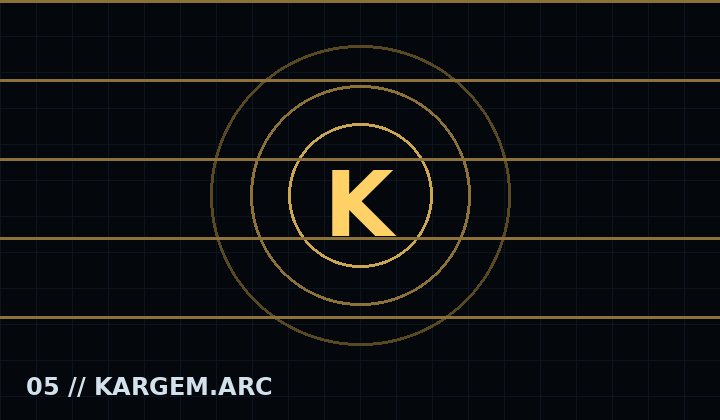
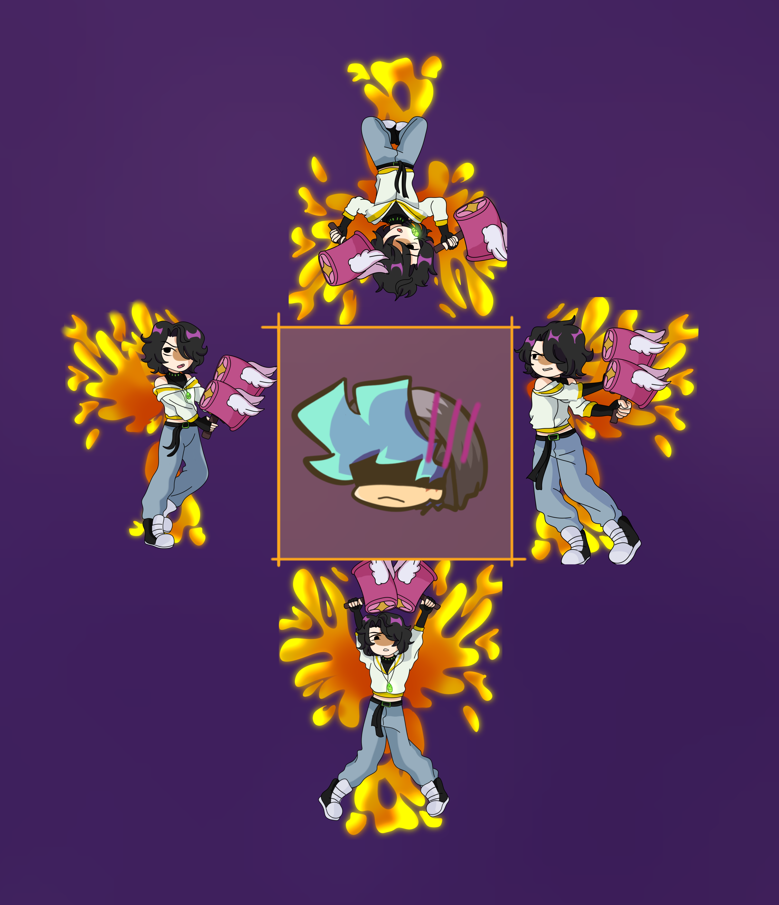

Datos parcialesMaterial visual actual
Historia
La información oficial de Kargem sigue en desarrollo.
Canciones
- 01 // Descarion
- 02 // Frustration → Irritation
- 03 // Stellarium
- 04 // Caged
Scrapped

SCRAPPED // PHOENIX FILE
Kargem Scrapped
Fue descartado por que se podria mejorar; incluso fue anadido oficialmente a NRX. Incluye Descarion, Frustration → Irritation, Stellarium y Caged.
>>
Mecánicas y presentación
- Mecánicas por confirmar